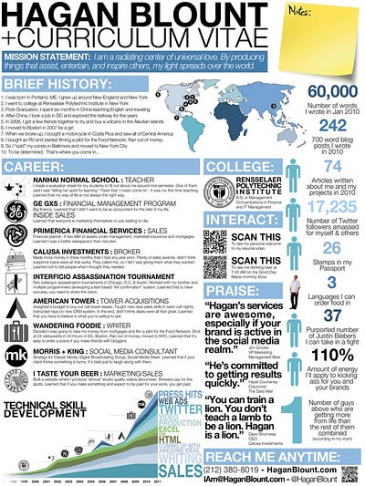
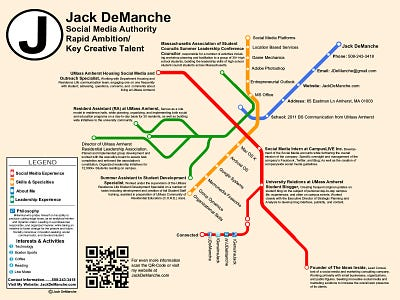
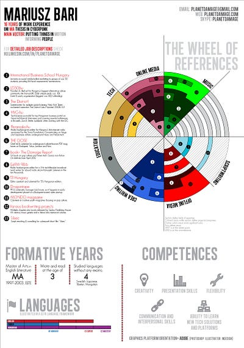
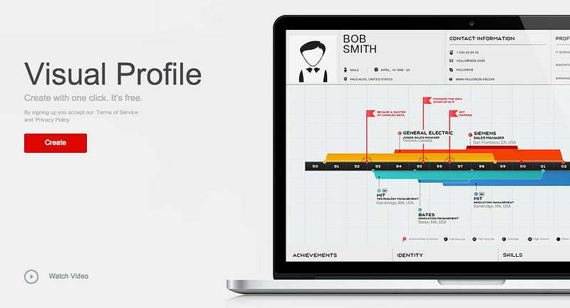
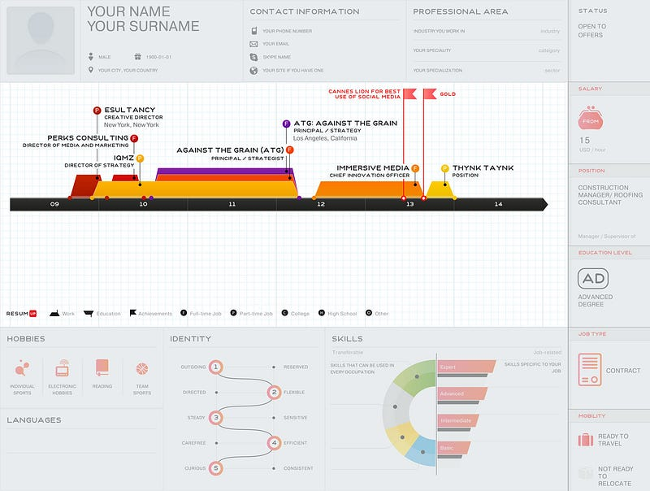
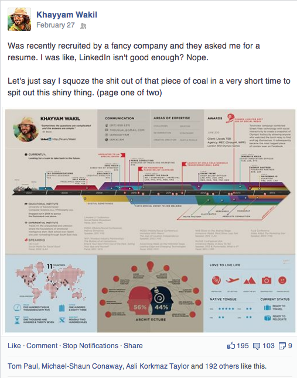
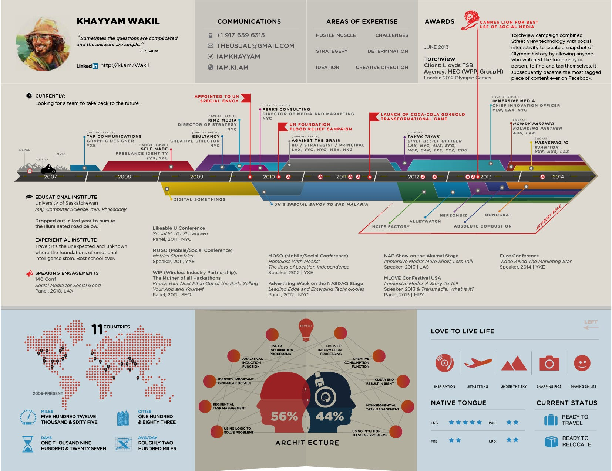
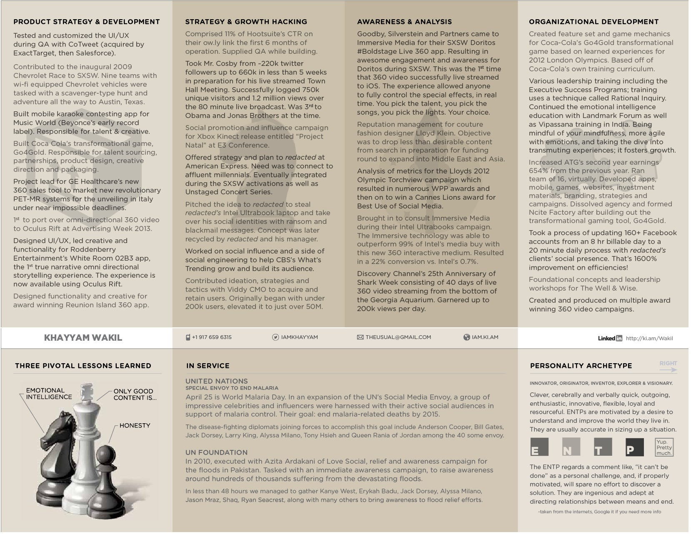
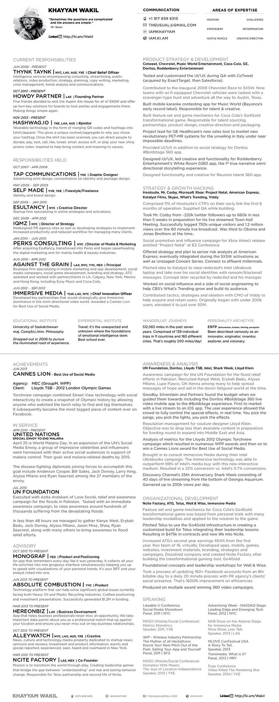

LinkedIn, Isn’t Good Enough
You need a resume and it’s got to be a good one! 🎖 It all started when I got recruited by a big fancy company. You can Google it. The recruiter initially contacted me on LinkedIn and based on my profile, I fit a certain set of requirements. Most people would be totally stoked. I blew it off. I was sitting on some sweet advertising technology. Not a game changer, but a rule bender. So I thought I could go it alone and blew it off. In the midst of a serious transition (location and occupation) a
You need a resume and it’s got to be a good one! 🎖
It all started when I got recruited by a big fancy company. You can Google it. The recruiter initially contacted me on LinkedIn and based on my profile, I fit a certain set of requirements. Most people would be totally stoked. I blew it off. I was sitting on some sweet advertising technology. Not a game changer, but a rule bender. So I thought I could go it alone and blew it off. In the midst of a serious transition (location and occupation) and family loss, reality set in and the number of zeroes behind the balance of the bank account started disappearing. Contacted the recruiter and asked if the offer was still on the table. It was. #gameon!
We had a phone call to chat about the finer points of the hiring process. She provided me with a list of resources and requirements. You also have to make a list of anyone that you know at the company, products you would like to work on, and a resume.
“A resume?” I asked. “Isn’t LinkedIn good enough?”
It wasn’t. And so began a journey to discover how to explain all that I am in two pages. Had to stand out at the same time maintain a refined presence. So I started with the internets.

Google search landed me deep in article after article of the best resumes, like, ever. So I started clicking through all of them. Lots of infographic styles, some pretty crazy timelines and some outright terribly awesome resumes. You know, they’re so bad, they’re good. None you’d ever want to submit, but still, so, so funny. Happened to stumble on a resume of my mate, Hagan Blount and it that’s where it all began. The mission was to find a way to bring everything together in the neatest two pages possible.

It was all about telling a story. How can you explain the growth and accomplishments in a storyline? My mind instantly leapt to transportation maps. Definitely needed something with multiple trees of discipline and skills. The search continues. #clickclickclick

The infographic just stuck with me, couldn’t shake it. An illustrative way to convey information while saving space and making even more white space. Clean. I liked it.
In the middle of my search, I managed to find an exceptionally helpful tool. It will make any resume look fantastical. You simply sign in with your Facebook or LinkedIn account and it ports the information over and instamagically creates an infographic of your resume. All yours with one click (after this next click): http://resumeup.com.

Which yielded this awkward mess for me when I used my LinkedIn account:

So I decided to use that as a base, opened up the dusty Illustrator icon and brushed off the InDesign; the rest is history. I absolutely love RESUMUP and know that they’ve made a very difficult task, easy. But to an ornery designer, there just isn’t enough control ☺ However, this is a gold mine for anyone else. It’s really quick and easy to use. And they’re not joking about the one click, it’s true. I’m quite particular, that’s all. My profiles didn’t jive so well in the translation so I decided to take things into my own hands.
While I was crafting this resume of art, I thought to myself, if the best in the world is hunting me down, then that means the the rest of the best really needs me. So I made an exercise out of it by choosing five companies in three different areas that I’d enjoy working with or help bring some innovative thought to, in some particular order:
Tech Titans:
YouTube, Google, Facebook, Samsung — OIC, Microsoft
Art & Copy:
teehan+lax, Ogilvy Innovation Labs, Google Creative Lab, Droga5, The Garage — W&K,
Innovations:
HBO, Oculus VR, QNX, Valve, Yahoo
Never put any effort for agencies, wasn’t really feeling the exciting life and times of agency world, although the labs I love. After my experience, I’ve realized something; the recruiting period is long and when you’ve got more than one suitor, it can get even longer. Narrow it down if you can and don’t bother playing them off one another, that’s a losing person’s gamble.
So I posted a page from the final version on my Facebook timeline to get some feedback. Got lots! Some comments were gold. Many people asked for a template. Others asked if I could design their resume. People wanted the ability to have this. So I thought to myself, why not?!

Decided to give the files away and create the opportunity for any of you to craft them for yourselves. No longer can I weather the feathered cap of a designer and certainly couldn’t recreate this splendor over and over. Some miracles, you just walk away from, very, very grateful.


Give a person a resume and you get them an interview.
Teach them to craft a story and they’ll be employed for a lifetime.
Or something like that. ‘All’s I know is that when you have to do it yourself, you learn something along the way. Valuable lesson one ought to learn.
If you should have questions or otherwise, please direct them to: theusual@gmail.com.
#gotyoucovered
Here is the InDesign package with all the files you’ll need to duplicate this visual story. This is the jaw dropper to get you to the next level of the recruitment game. It’s not a template, but if you’re savvy, you’ll be happy.
view / download //visual version
Hope this helps to spank up your resume or at least inspire you. Either way, you have a one click solution or a heavy design day ahead of you.
Here’s an extra version, a plain jane one full of textual healing (pictured below). It was paramount to arriving at the final visual version. Still, very important to have a suitable version for whatever intention. Clean and neat is a good thing.
view / download //textual version
If you found this useful, by all means, share it. If you have a team that wants to go back to the future, you know where to find me ☺ #88milesperhour
Article originally posted on LinkedIn.

@iamkhayyam and you are awesome! Thanks for sharing.